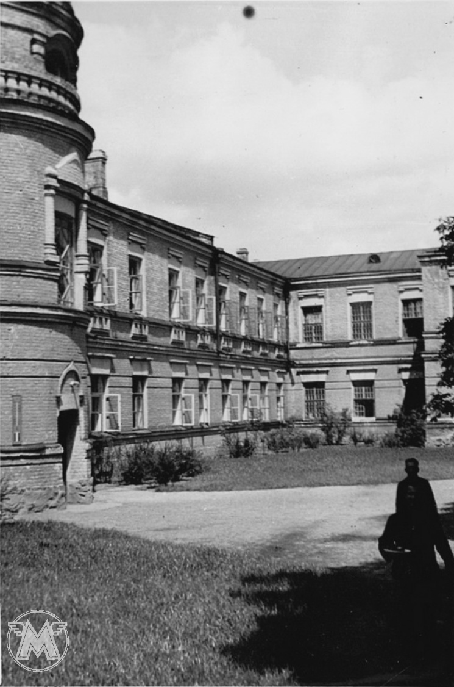
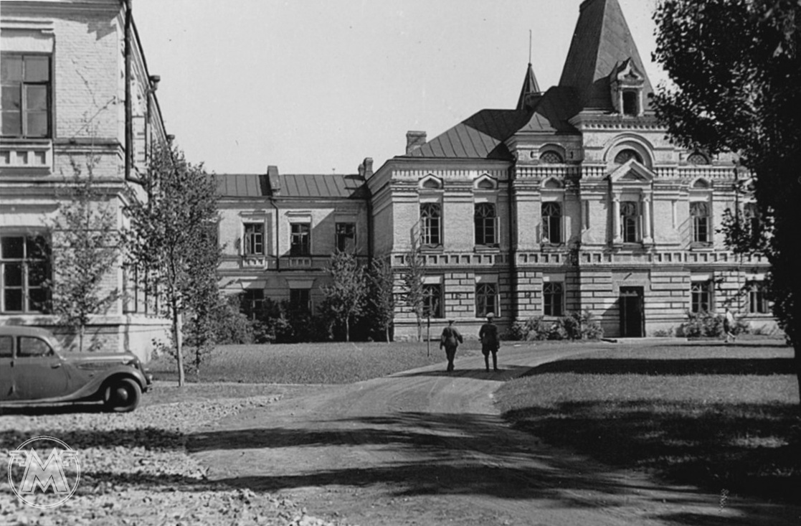
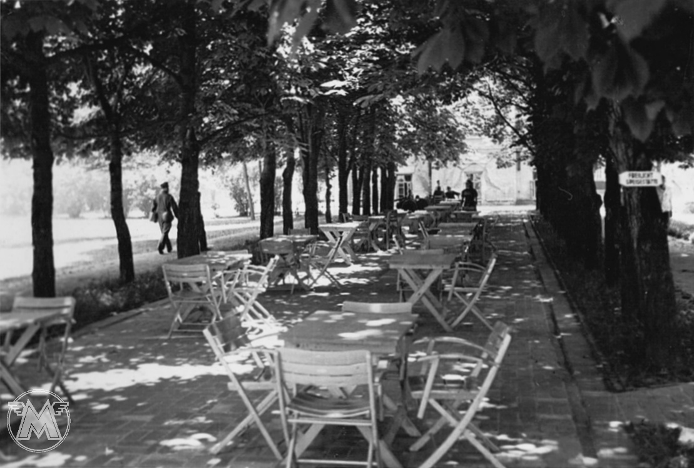
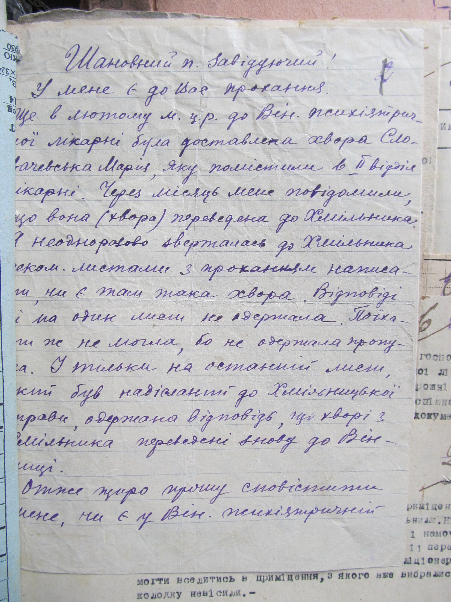
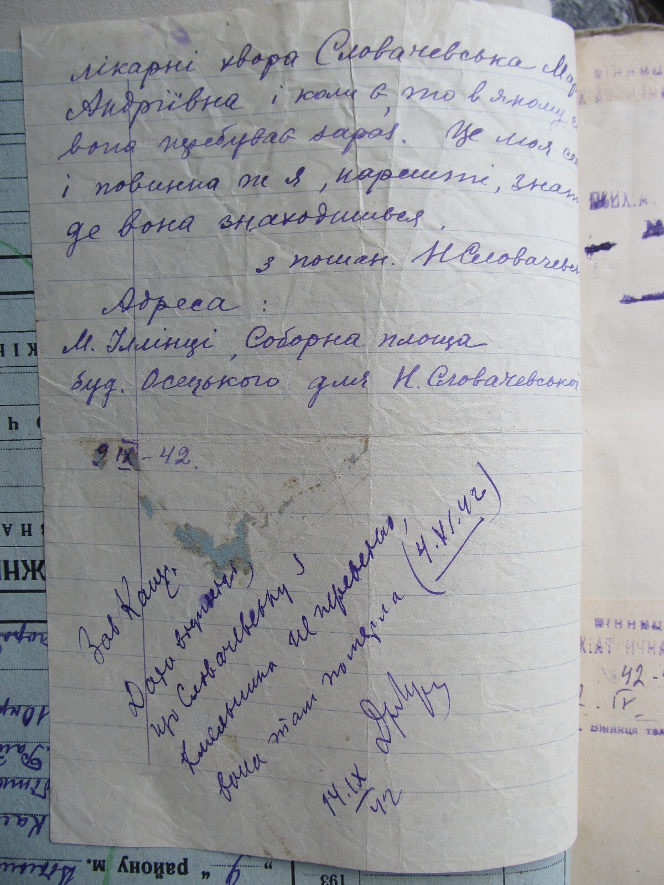

Після вбивства євреїв, пацієнтів та медперсоналу, процес умертвіння хворих тривав. Особливо активно він відбувався наприкінці жовтня – початку грудня 1941 р. За 5 місяців було вбито майже на 600 пацієнтів. Людей морили голодом, скоротивши до мінімуму харчування, а також продовжували робили смертельні ін’єкції з отрутою. Частина медичного персоналу не бажаючи брати участь у злочинах йшла з лікарні. У книзі наказів зафіксовані масові звільнення за власним бажанням упродовж листопада-грудня 1941 р.
Частина медичного персоналу не бажаючи брати участь у злочинах йшла з лікарні. У книзі наказів зафіксовані масові звільнення за власним бажанням упродовж листопада-грудня 1941 р.
З початком будівництва поблизу Вінниці ставки Гітлера «Вервольф» керівництво лікарні в середині березня 1942 р. отримало вказівку негайно звільнити приміщення.
Частину пацієнтів, приблизно 150 осіб, із незадовільним станом здоров’я вирішили перевести до Хмільника. Їх розмістили у напівзруйнованих та неопалюваних казармах військового містечка (колишньої полкової школи) на території села Вугринівка (з 1959 р. у складі м. Хмільник). Поряд був табір для радянських військовополонених. Упродовж трьох днів пацієнти знаходилися у палатках, оскільки приміщення військових казарм були завалені сміттям та соломою. Унаслідок перебування на холоді та від голоду за весь цей час померло 50-60 осіб. Решту, 90-95 осіб, розстріляв ранком 4 червня 1942 р. каральний загін СД та місцевої поліції за десять метрів від казарм перед завчасно викопаними ямами.
Посвідчення директору лікарні Лук’яненку від штадткомісара Вінниці Маргенфельда щодо ліквідації лікарні в Хмільнику 11 червня 1042 року. © Державний архів Вінницької області.
Іншу частину пацієнтів, здебільшого тих, що могли оплатити своє лікування, було переведено в приміщення колишнього 2-го арештантського будинку (приміщення НКВС) за адресою: Літинське шосе, 39. Станом на 22 березня 1942 р. тут знаходилося 112 осіб, яких обслуговували 28 медичних працівників.
Психіатрична лікарня по Літинському шосе функціонувала аж до повернення радянської влади. Станом на 14 лютого 1944 р. (останній день запису в журналі вибуття та прибуття хворих) в лікарні перебувало 50 пацієнтів.


Фотографії будівель і подвір’я Вінницької психіатричної лікарні, в яких розташувався німецький санаторій та казино «Вальдгоф». 1942–1943 рр. © Приватна колекція М. Богарта
У березні 1942 р. частину приміщень лікарні було передано під квартири співробітникам та охоронцям ставки Гітлера, які вселилися в них 15 липня 1942 р. Інші приміщення були використані німцями під санаторій і казино «Вальдгоф» для офіцерів.
Автомобіль з газогенераторною установкою біля будівлі Вінницької психіатричної лікарні. 1942–1943 рр. © Приватна колекція М. Богарта
Судячи з номерів, які містять літери «MU», автомобіль належав командуванню Вермахту в Україні. Під час війни оснащення авто газогенераторними установками, у яких спалювали дрова було досить поширеним, оскільки бензину не вистачало. Потрібно було 2,5 – 3,5 кг дрів замість одного літра бензину. Кожні 50-100 км шляху потрібно було заправляти авто дровами.


Сучасне фото паркової алеї Вінницької психіатричної лікарні та фото часів війни, коли тут розміщався німецький санаторій «Вальдгоф». 1942–1943 рр. © Приватна колекція М. Богарта
ДОДАТКОВІ ДОКУМЕНТИ
Повідомлення про смерть в історії хвороби Фросини Заярнюк, пацієнтки Вінницької психіатричної лікарні. 27 січня 1942р. © Державний архів Вінницької області.
Повідомлення про смерть в історії хвороби Олександра Жедіка, пацієнта Вінницької психіатричної лікарні. 9 лютого 1942 р. © Державний архів Вінницької області.
Лист Олексія Мороза до Вінницької психіатричної лікарні з проханням вислати одяг його дружини Ольги, пацієнтки лікарні. 5 травня 1942 р. © Державний архів Вінницької області.
На листі припис співробітників лікарні: «померла 12 лютого 1942 р.»


Лист сестри Марії Словачевської, пацієнтки Вінницької психіатричної лікарні, яка її розшукує і намагається довідатися про її стан здоров’я. 2 вересня 1942 р. © Державний архів Вінницької області.На листі відповідь зав. канцелярії: «Словачевська з канцелярії не переведена вона там померла. 4. VI. 1942»
Текст оголошення до газети «Вінницькі вісті» про переїзд Психіатричної лікарні до будинку по вул. Літинське шосе та Хмільника і відновлення прийому хворих з 1 травня. квітень 1942 р. © Державний архів Вінницької області.
Лист-перепустка від штадткомісара Вінниці Маргенфельда для пред’явлення 466-му ландшуцбатальйону, розквартированому в казармах м. Хмільник. 12 березня 1942 р. © Державний архів Вінницької області.
Наказом від 12 березня 1942 р. 675-ї польової комендатури м. Вінниця будівля казарми колишньої школи унтерофіцерів м. Хмільник передана для розміщення пацієнтів Вінницької психіатричної лікарні. Пред’явникам цього листа дозволяється проведення усіх необхідних підготовчих робіт, щоб переїзд був здійснений якомога швидше […].
Посвідчення співробітників Вінницької психіатричної лікарні, які відряджаються в Хмільник для організації прийому там пацієнтів, які переводяться з Вінниці. 13 березня 1942 р. © Державний архів Вінницької області.
Наказ №73 директора Вінницької психіатричної лікарні Антона Лук’яненка про організацію перевезення хворих лікарні до Хмільника. 14 березня 1942 р. © Державний архів Вінницької області.
Наказ № 216 директора Вінницької психіатричної лікарні Антона Лук’яненка про заходи усунення порушень у роботі кухні та припинення крадіжок. 5 серпня 1942 р. © Державний архів Вінницької області.
Заявка Вінницької психіатричної лікарні до відділу торгівлі та постачання Вінницької міської управи про видачу карток на хліб за серпень 1942 р. на 100 хворих лікарні. © Державний архів Вінницької області.